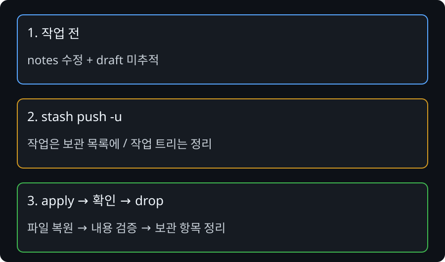
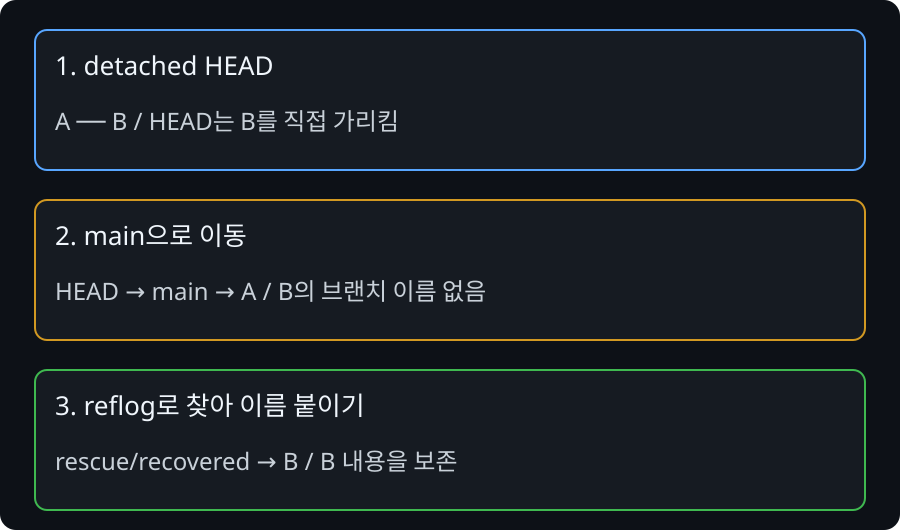

취소·임시 보관·분실 복구는 서로 다른 문제
‘되돌린다’는 말만으로는 명령을 고를 수 없습니다. 파일만 버릴지, 커밋을 취소할지, 다른 작업을 위해 잠시 치울지, 잃은 커밋을 찾을지 먼저 나눕니다.
내부에서는 어떤 일이 일어날까?
restore --staged는 커밋 후보를 바꾸고 작업 파일을 남깁니다. 일반 restore는 작업 파일 내용을 복원합니다. reset의 커밋 지정 형식은 현재 브랜치의 위치를 이동하며 모드에 따라 index와 작업 트리도 바꿉니다. soft가 파일을 남겨도 공유 이력 변경까지 안전한 것은 아닙니다.
revert는 대상 커밋의 변경을 반대로 적용한 새 커밋을 만듭니다. 과거 커밋이 이력에 남기 때문에 취소 이유를 추적할 수 있습니다. 이후 변경과 겹치면 revert 자체도 충돌할 수 있습니다.
stash는 작업 중 내용을 임시로 보관합니다. 기본값은 미추적 파일을 포함하지 않으므로 -u가 필요한지 판단해야 합니다. reflog는 로컬 참조의 이동 기록이며, 커밋하지 않은 모든 편집 내용을 기록하는 백업이 아닙니다.

1. 시작 상태 만들기
아래 명령은 새 연습 폴더에서 Markdown 파일로 상황을 직접 만듭니다. PowerShell에서 한 줄씩 실행하세요. Set-Content는 파일을 덮어쓰므로 기존 프로젝트에서 실행하지 않습니다. 예상 오류 외의 실패가 나오면 중단합니다. 전체 직접 실습 MD 다운로드
# Windows PowerShell. 한 줄씩 실행하고 실패하면 멈춥니다.
$practiceRoot = Join-Path ([IO.Path]::GetTempPath()) ("git-md-" + [guid]::NewGuid())
New-Item -ItemType Directory -Path $practiceRoot -ErrorAction Stop
Set-Location $practiceRoot
git init -b main
git config user.name "Practice Student"
git config user.email "practice@example.invalid"
# 아래 설정은 이 새 연습 저장소에만 적용합니다.
git config commit.gpgsign false
git config core.autocrlf false
git config core.whitespace cr-at-eol
git config core.hooksPath .no-hooks
Set-Content README.md "team=base"
Set-Content notes.md "note=base"
git add README.md notes.md
git commit -m "docs: base"
git status --short
Set-Content README.md "team=wrong"
git add README.md
git commit -m "docs: wrong value"
# 공유됐다고 가정한 커밋에 표시만 붙입니다. 네트워크 전송은 없습니다.
git tag practice-shared-tip
git log --oneline --decorate -2README의 wrong 변경을 커밋한 상태입니다. practice-shared-tip은 팀이 이미 받았다고 가정한 커밋을 표시합니다. 실제 공유 저장소를 위험하게 만들지 않고 취소 이력을 연습합니다.
2. 진단하고 예상하기
git status git show HEAD git log --oneline --decorate
명령 실행 전 어떤 파일·참조가 달라질지 말하고, 실행 후 출력과 비교합니다.
3. 복구 방법 선택
이 실습에서는 이미 공유된 커밋이라는 조건이므로 이력 이동 대신 반대 커밋을 남깁니다. merge commit을 revert하는 것은 기준 부모 선택이 추가로 필요하므로 일반 단일 커밋 실습과 구분합니다.
판단 후 복구 절차 펼치기
git revert --no-edit HEAD
4. 복구 성공을 검증하기
git log --oneline -3 Get-Content README.md git merge-base --is-ancestor practice-shared-tip HEAD git status
base → wrong → 취소 커밋 순서가 남고 파일 내용은 base입니다. is-ancestor 종료 코드 0은 원래 커밋이 새 HEAD의 조상으로 남았다는 뜻입니다. 성공한 명령이 항상 문장을 출력하지는 않습니다.
restore와 hard reset으로 버린 미커밋 변경은 reflog만으로 복구를 보장할 수 없습니다. 공유 이력 재작성과 secret 이력 삭제는 팀 관리자와 진행합니다.
5. 조건을 바꿔 설명하기
stash 모드: push -u → list/show → apply → 내용 확인 → drop 순서로 draft까지 복구하세요. lost 모드: reflog에서 'feat: detached work' 해시를 찾아 git show로 확인한 뒤 git switch -c rescue/recovered 해시로 보존하세요. HEAD@{1}을 무조건 정답으로 외우지 않습니다.
제출할 문서는 없습니다. 화면에서 근거를 가리키며 “현재 상태 → 선택 이유 → 남은 작업”을 설명합니다.
별도 실습 A · 새 파일까지 임시 보관하고 돌아오기
아래 공통 준비와 stash 상황 명령을 순서대로 실행합니다. notes는 추적 중인 수정 파일, draft는 아직 추적하지 않는 새 파일입니다. 기본 stash와 -u의 차이를 판단합니다.
# Windows PowerShell. 한 줄씩 실행하고 실패하면 멈춥니다.
$practiceRoot = Join-Path ([IO.Path]::GetTempPath()) ("git-md-" + [guid]::NewGuid())
New-Item -ItemType Directory -Path $practiceRoot -ErrorAction Stop
Set-Location $practiceRoot
git init -b main
git config user.name "Practice Student"
git config user.email "practice@example.invalid"
# 아래 설정은 이 새 연습 저장소에만 적용합니다.
git config commit.gpgsign false
git config core.autocrlf false
git config core.whitespace cr-at-eol
git config core.hooksPath .no-hooks
Set-Content README.md "team=base"
Set-Content notes.md "note=base"
git add README.md notes.md
git commit -m "docs: base"
git status --short
Set-Content notes.md "note=unfinished"
Set-Content draft.md "draft=keep"
git status --short
# 위 명령으로 이동한 새 연습 폴더에서 계속합니다.
git status --short
git stash push -u -m "profile WIP"
git stash list
git stash show --include-untracked -p 'stash@{0}'
git stash apply 'stash@{0}'
Get-Content notes.md
Get-Content draft.md
git status --short
# notes=unfinished, draft=keep 확인 뒤에만 정리
git stash drop 'stash@{0}'apply는 목록을 유지한 채 적용합니다. pop은 적용에 성공하면 보관 항목을 제거하지만 충돌하면 항목이 남을 수 있습니다. 오류 후 pop을 반복하지 말고 status와 stash list로 현재 상태를 확인합니다. 원래 stage 구분까지 복원해야 한다면 --index의 의미를 별도로 확인합니다.

변형: 보관 뒤 같은 파일을 다른 내용으로 수정·커밋하고 적용하면 충돌할 수 있습니다. 이때 stash 항목은 유지하고 충돌 파일의 최종 내용을 합의합니다. stash apply 충돌은 merge --abort를 무조건 적용할 상황이 아니므로 현재 작업 종류부터 구분합니다.
별도 실습 B · 잃은 커밋에 다시 이름 붙이기
lost 모드는 detached HEAD에서 커밋한 뒤 main으로 돌아온 상태입니다. HEAD가 브랜치 이름이 아닌 커밋을 직접 가리키는 동안 만든 작업에 유지할 브랜치가 없었습니다.
# Windows PowerShell. 한 줄씩 실행하고 실패하면 멈춥니다.
$practiceRoot = Join-Path ([IO.Path]::GetTempPath()) ("git-md-" + [guid]::NewGuid())
New-Item -ItemType Directory -Path $practiceRoot -ErrorAction Stop
Set-Location $practiceRoot
git init -b main
git config user.name "Practice Student"
git config user.email "practice@example.invalid"
# 아래 설정은 이 새 연습 저장소에만 적용합니다.
git config commit.gpgsign false
git config core.autocrlf false
git config core.whitespace cr-at-eol
git config core.hooksPath .no-hooks
Set-Content README.md "team=base"
Set-Content notes.md "note=base"
git add README.md notes.md
git commit -m "docs: base"
git status --short
git switch --detach HEAD
Set-Content README.md "team=lost-work"
git add README.md
git commit -m "feat: detached work"
git switch main
git reflog -5
# 위 명령으로 이동한 새 연습 폴더에서 계속합니다.
git reflog
# feat: detached work 행의 실제 해시 확인
git show 실제-해시
git switch -c rescue/recovered 실제-해시
Get-Content README.md
git log --oneline --decorate -3README의 lost-work 내용과 rescue/recovered 참조가 보이면 복구됐습니다. 예제 해시를 그대로 입력하지 않습니다. reflog는 로컬 기록이며 다른 PC의 기록을 clone으로 가져오는 것이 아닙니다. 만료·정리된 객체와 미커밋 변경은 복구를 보장하지 않습니다.

공식 문서와 연결
Git revert 공식 문서에서 명령의 입력·출력 범위를 확인합니다. 예제는 PowerShell 기준입니다. 실제 해시·브랜치명은 출력에서 확인하며 그대로 추측해서 입력하지 않습니다.